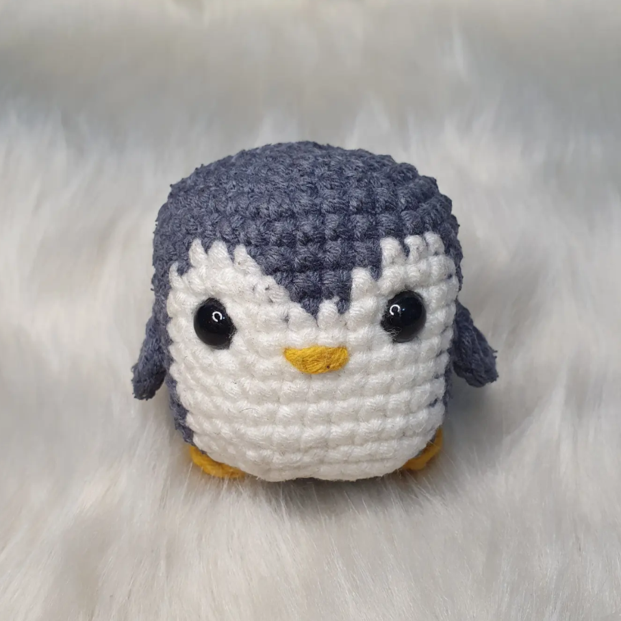
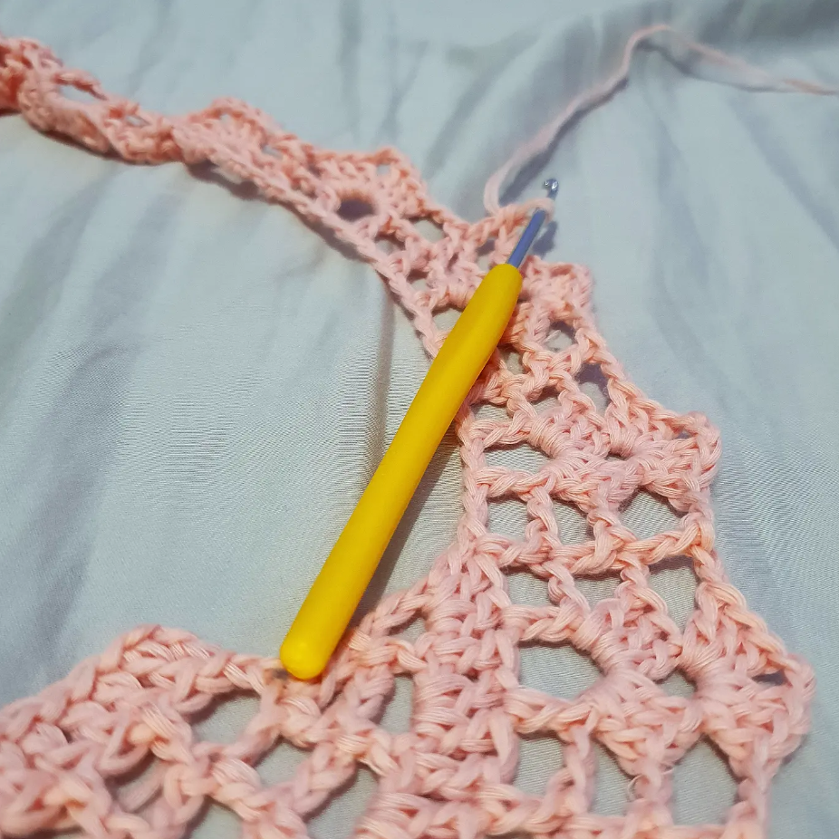
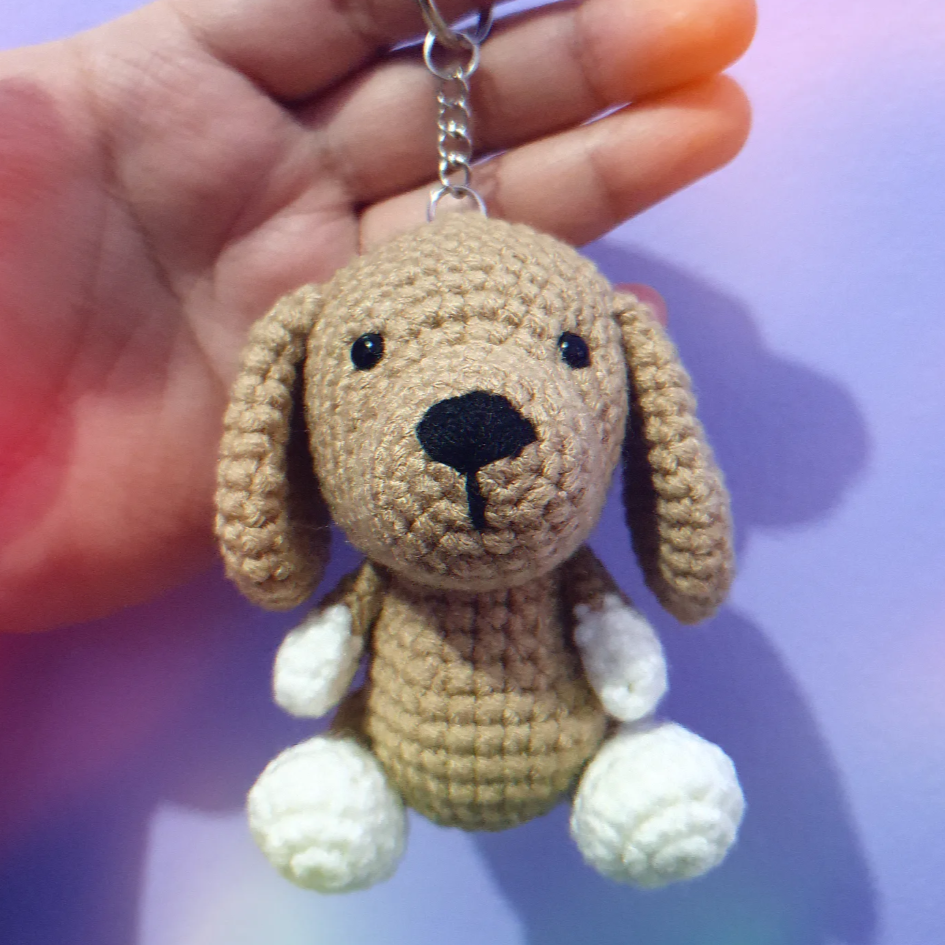
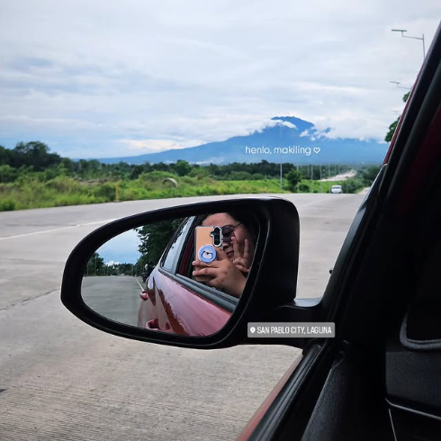
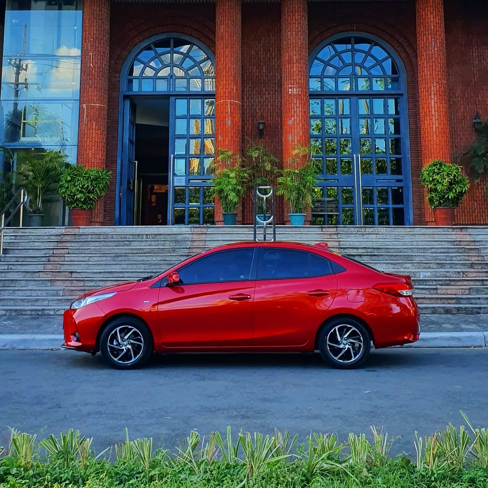
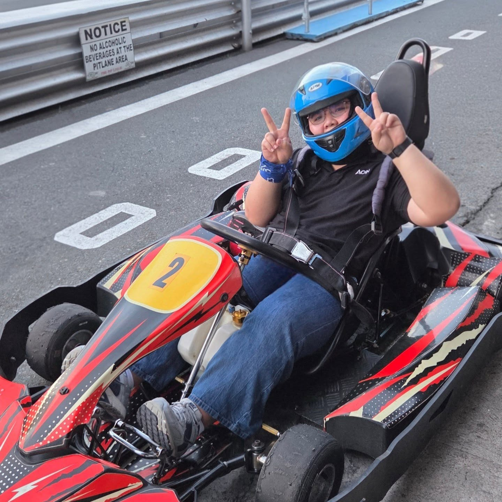
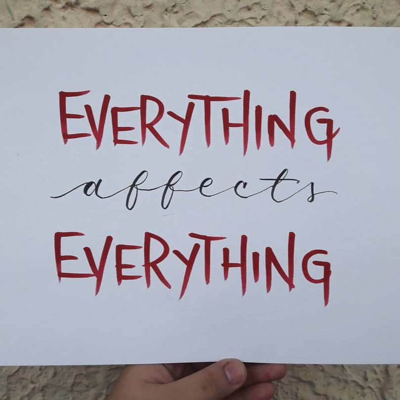
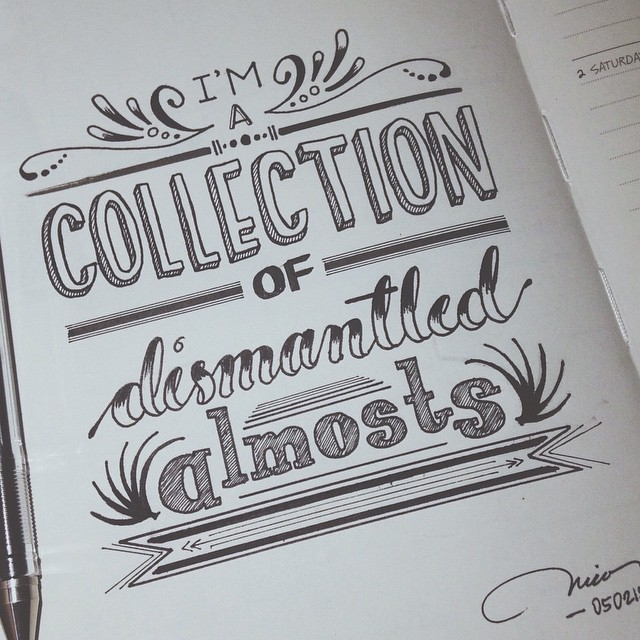
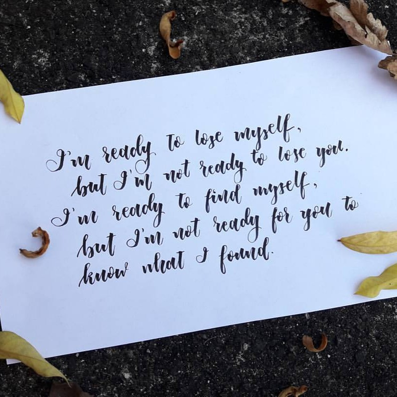

Welcome! I'm Nica :)
I am an Applied Mathematics graduate from UP Los Baños, now diving deeper into the world of technology as a Diploma in Computer Science student at UP Open University. By day, I serve as a Director at one of the leading firms in health, wealth, and people consulting. We turn data and strategy into decisions that affect real lives.
This website is my little corner of the internet: a curated mix of stories, snapshots and reflections from my journey so far. You'll know the twists and turns (and all the tiny moments in between) that continue to shape who I am.

I've always felt that the things we keep coming back to say a lot about who we are. This little corner is for those obsessions that quietly shape my days and keep me curious. They're the small joys that add a bit of color and chaos to my everyday. Welcome to the behind the scenes at what I genuinely enjoy, beyond the usual bio details.
I discovered crocheting back during the height of the pandemic. I love puzzles and for me, crocheting feels a bit like puzzling with a touch of math woven into the patterns. I could go on all day just looping through yarn but since I'm always drawn to trying new things, I have a loooooooot of works in progress right now.
Amigurumis like the ones below are the cutest things you can make but they're a pain to work on since you need to keep the yarn tight and they're always so small. Still, they're undeniably adorable and totally worth the effort. I also make wearables and I’ve already made some cozy pieces for my best friend.



Another thing that I truly enjoy is driving. Whenever there's a lot on my mind, a long drive helps clear my head and reset my mood. Back in 2020, I was blessed with a car and I named him Stark, after my favorite Marvel character. Since then, he's taken me to places I never thought I'd reach and I'm grateful I get to share those little road adventures with my family and friends.



I like spending my free time practicing calligraphy and exploring typography. I usually write my favorite phrases from the books I read or the shows I watch, trying different pens, brushes and lettering styles. My works aren't perfect but I enjoy slowly improving and learning new techniques as I go. Writing, in general, has become a small escape for me when I feel stressed. It is a simple and relaxing hobby that lets me play around with letters while enjoying words and lines that stand out to me.


